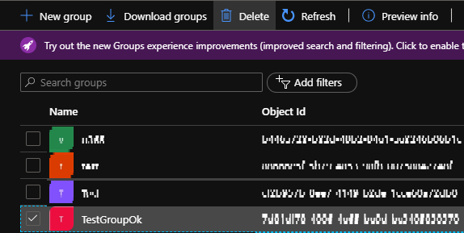
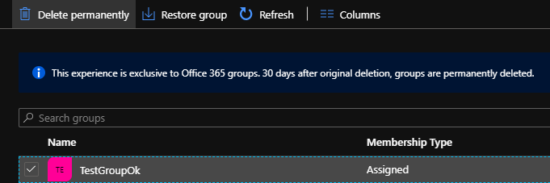
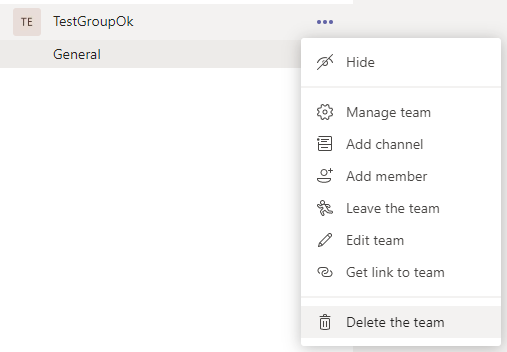
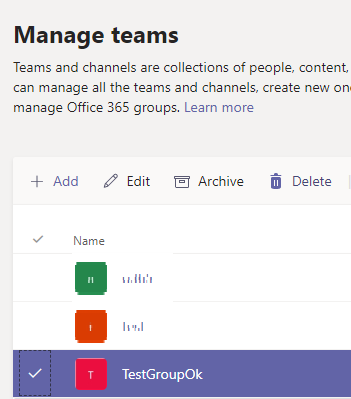

How to quickly and properly delete a Team (without waiting)
Use Case
You work for a company that wants to automatically create a Team with Tabs, Channels and other stuff that will make a new project team ready to rock the stage.
You are preparing the process and for mastering it, you have create / test / destroy / retry. But when you want to clean up your mess, you have to know that, during 30 days:
- Your Team still exists as a Group (you can find it in the "Deleted Groups" menu on AAD), same for the associated e-mail address
- The Teams Site also still exists
So let's says that you made a mistake during the creation of a Team and want to "start over" (with same name of course), if you don't want to wait for the Office 365 Job to update your environment and re-create the Team with same name:
-
The SharePoint Site URL takes a number at the end of its address (of course, because the older one's still here)
-
You can't permanently delete the Teams Site, as the SharePoint Admin Center detects that the related Group still exists
Here's a step by step process to delete quickly a Team ! I recommand to follow them in this order to make everything's work.
Prerequisites
- An Office 365 (Dev) Tenant
- An Account with the following Office 365 roles
- SharePoint Admin
- Teams Admin
- An Account with the following Azure AD role
- Groups administrator
- PowerShell or Office 365 CLI
Delete Group in Azure
With Interface
Throught the UI, you have to delete the Group then permanently delete it


With code
1 2 3 4 | |
1 2 3 | |
Delete Team (if necessary)
Sometimes, once a Group is permanently deleted, the Team still exists. If it's the case and once again, you don't want for the Job to delete it, you can do it yourself. But don't be surprise if the following commands throw an error : maybe the Job has already worked.
With Interface
Throught the UI (if you have an owner account) or Admin Interface, you can delete the Team


With the Teams PowerShell module
1 2 | |
Delete Site Collection
As I told you before (even if you did the previous steps), if you try to delete the Teams Site from the SharePoint Admin Center, you won't be able to remove it from the Site Collection Recycle Bin (because of the O365 Job Tenant update process).
With code
So the solution here is to delete the Site with PowerShell (SharePoint PnP PoweShell module), like this:
1 2 3 4 5 6 7 | |
1 2 3 4 | |
That's it
Et voilà ! You can start over your process until it's ready to use.
Of course, you could also make those tasks with the SharePoint Online Management Shell or with the Graph API, but here I've covered the most common ways of working with Teams / Group / SharePoint administration.